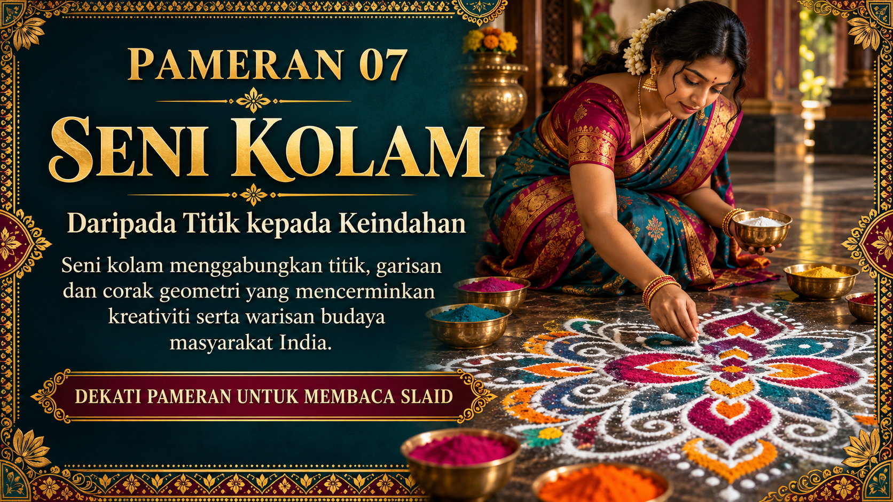
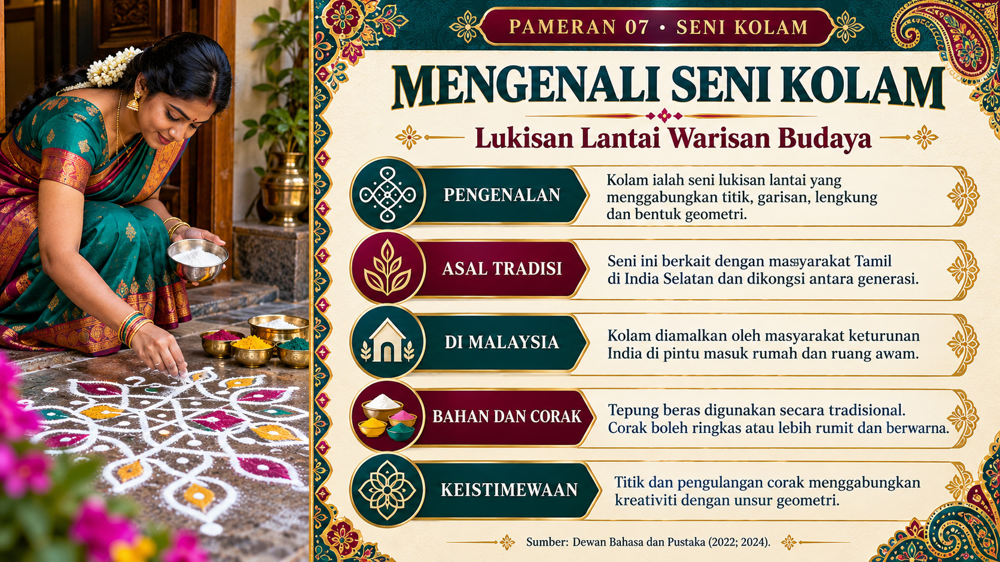
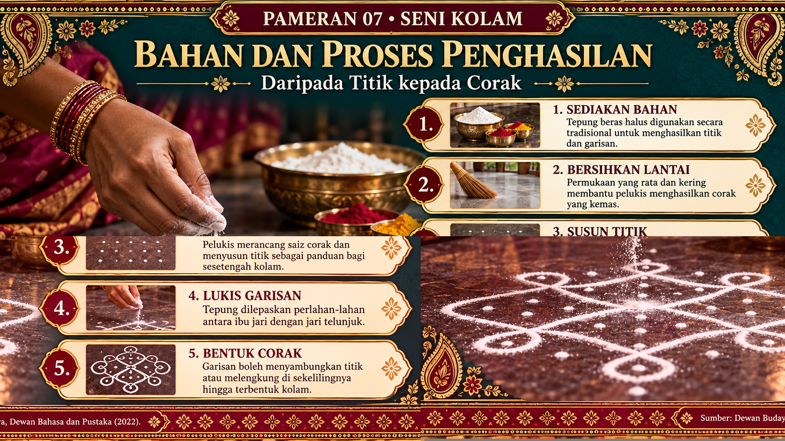
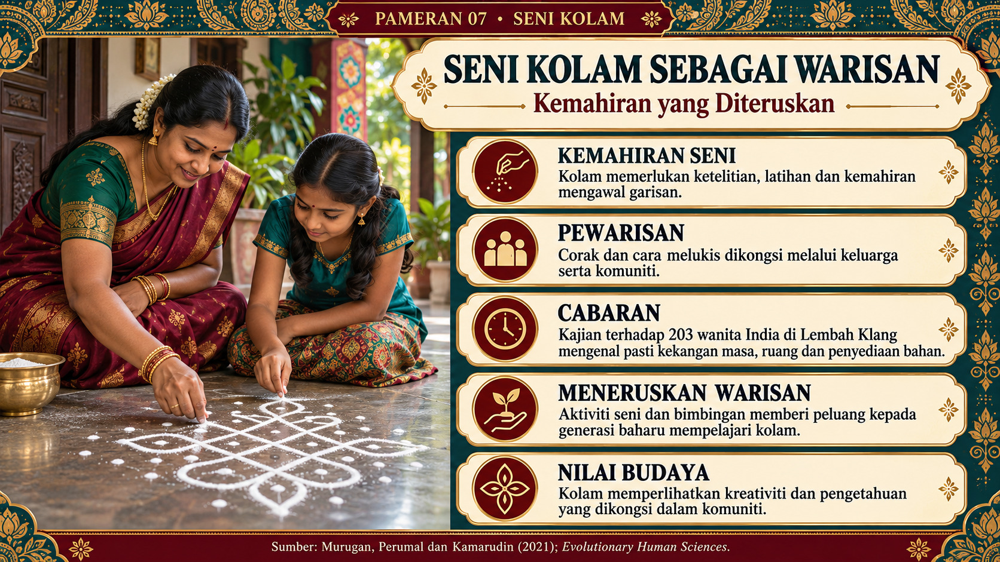
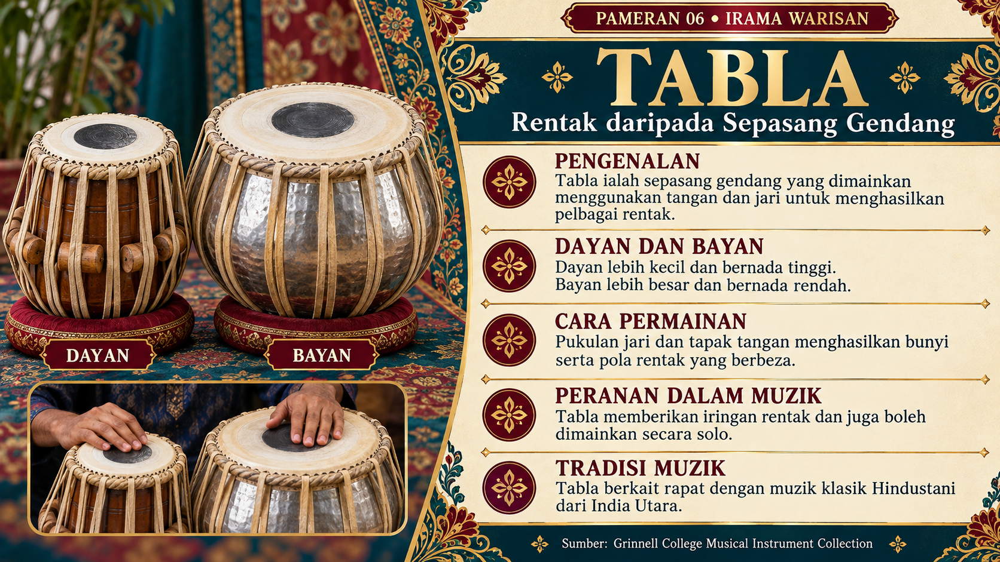
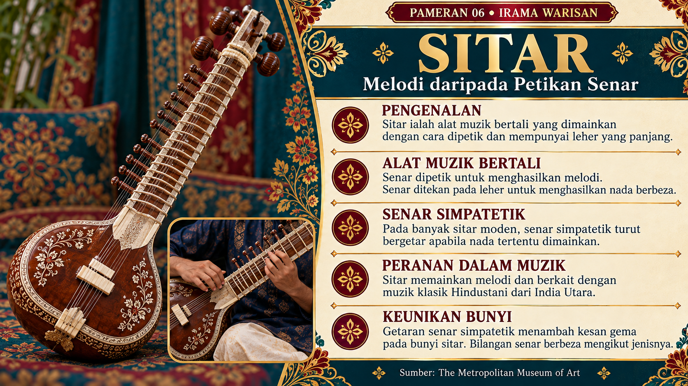
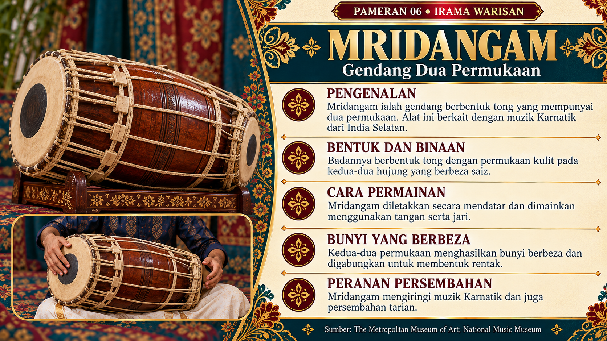
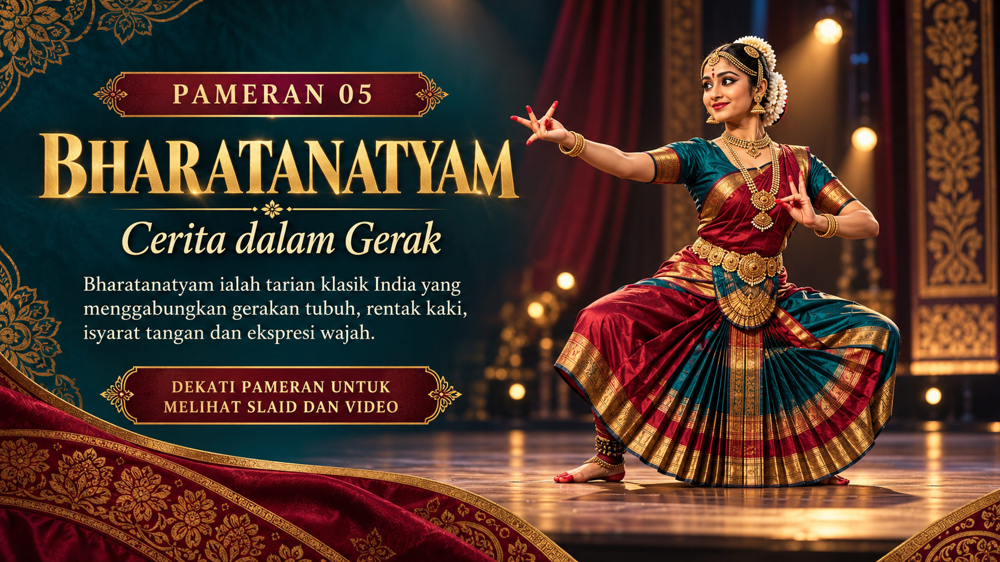
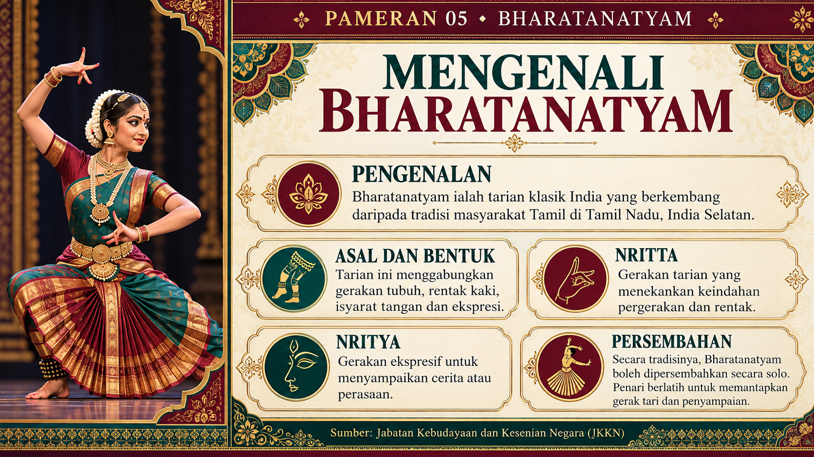
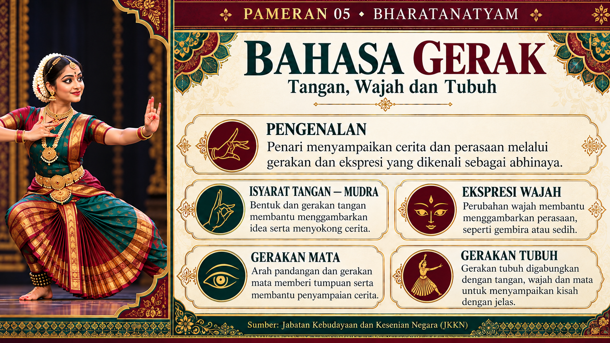
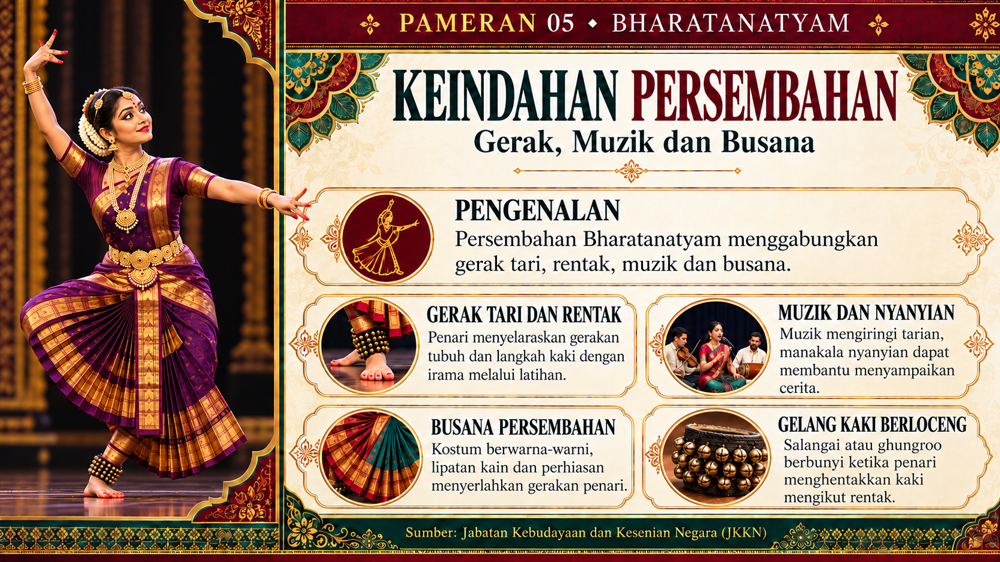
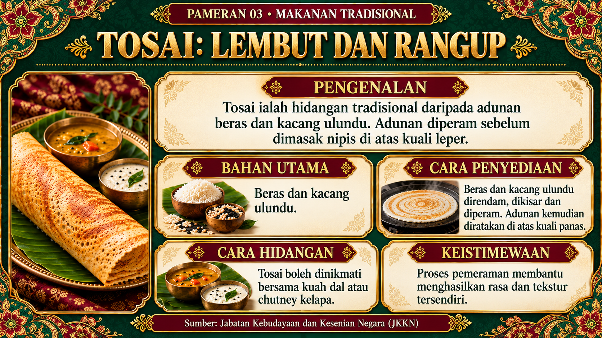
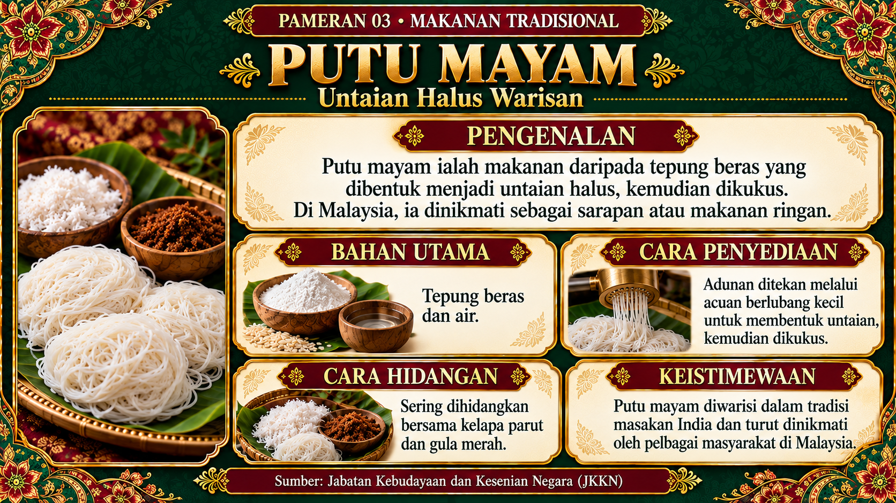
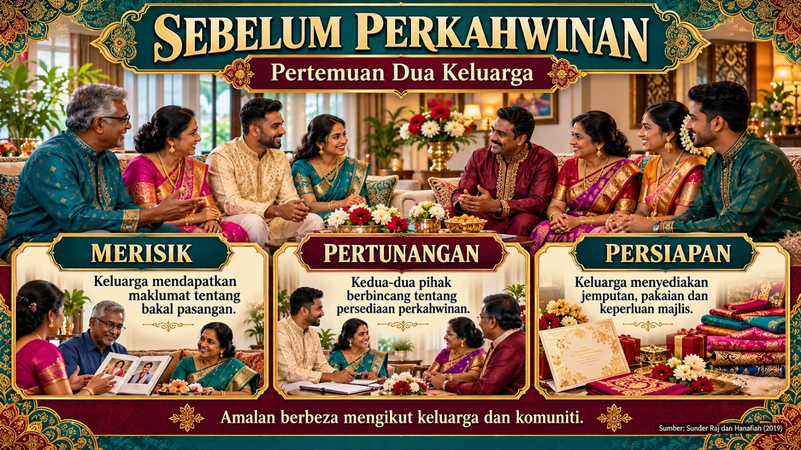
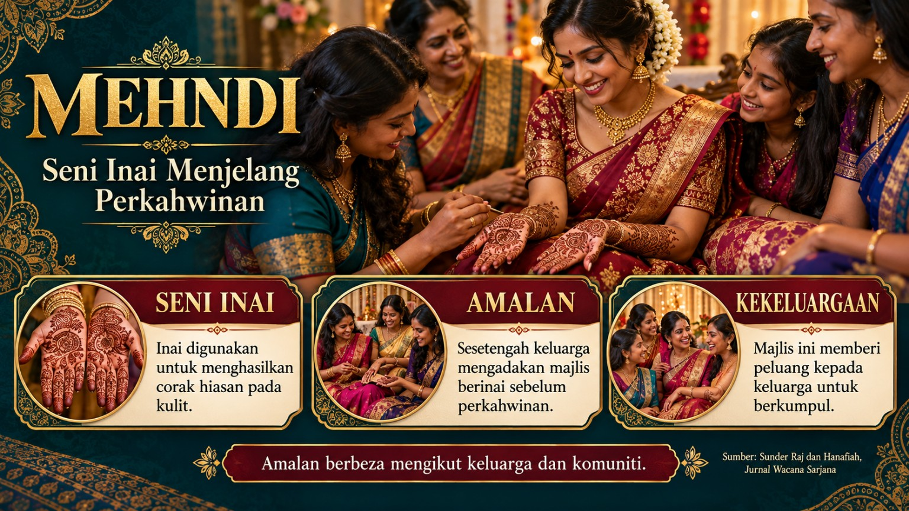
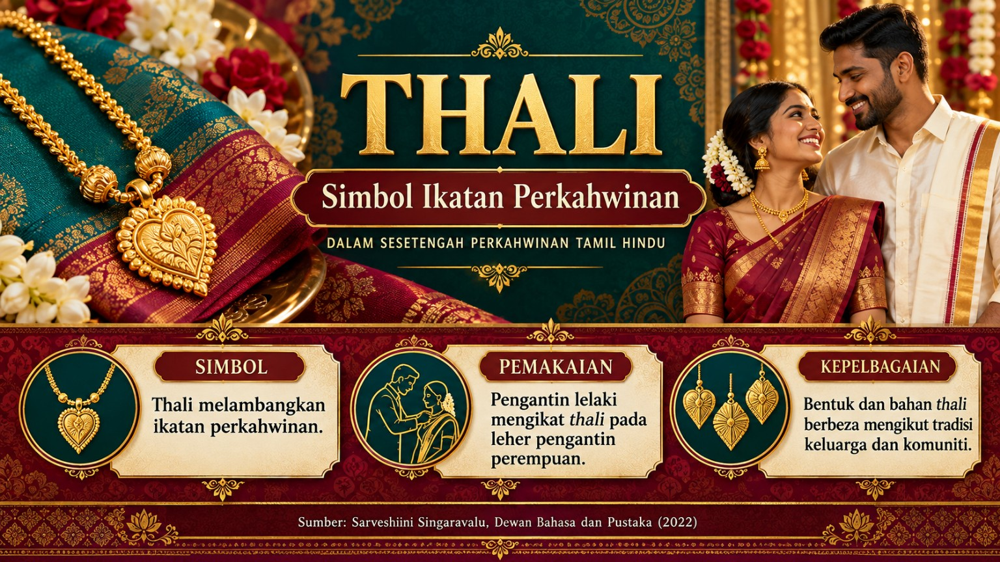
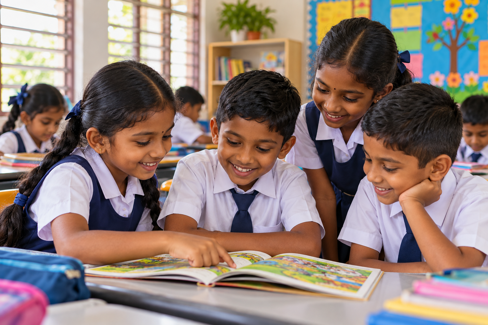
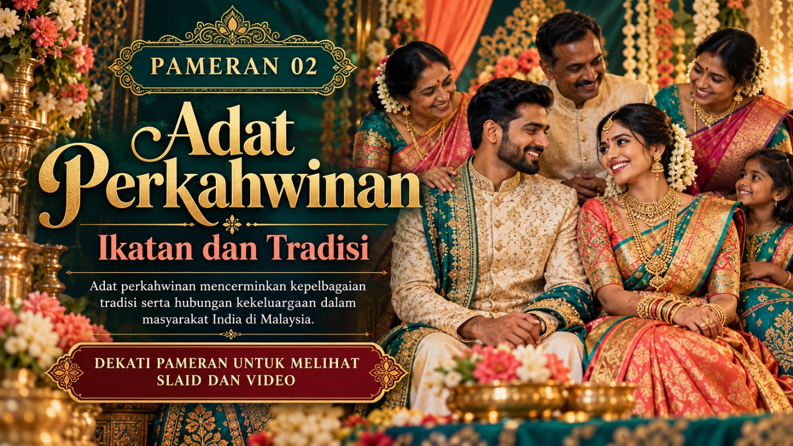
Mulakan perjalanan di hadapan muzium. Berjalan ke pintu masuk dan terokai sembilan pameran di sepanjang koridor.
Klik butang di bawah untuk mengawal pandangan dengan tetikus. Tekan Esc untuk melepaskannya.